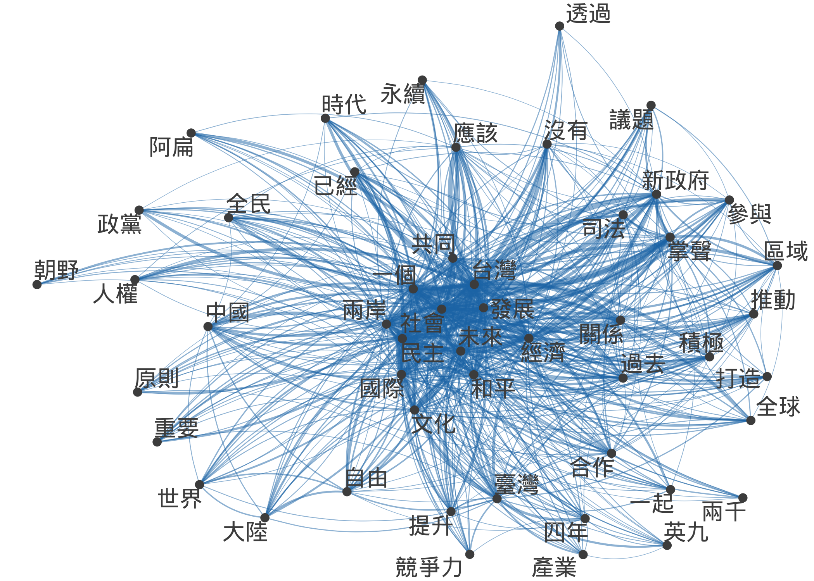
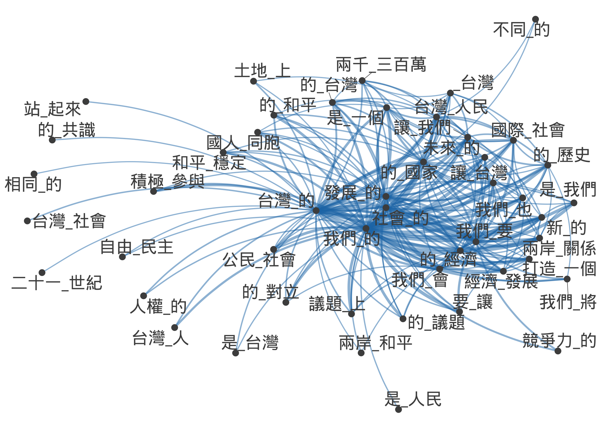
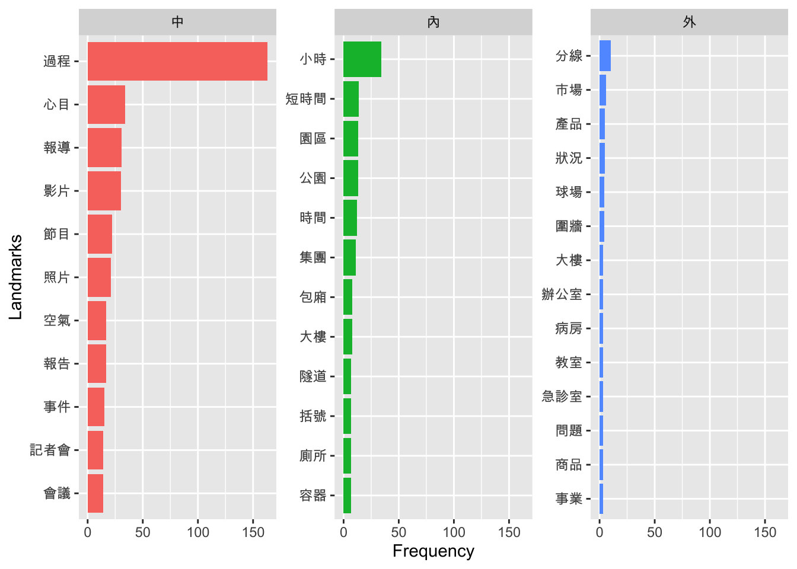

Chapter 14 Vector Space Representation II

Figure 14.1: Corpus Processing Flowchart
In Chapter 13, we have demonstrated the potential of a vector representation of documents with the English data. Here, we would like to look at the Chinese data in more detail.
In the corpus data processing flowchart, as repeated below (Figure 14.1), we need to deal with the word segmentation with the Chinese data. This prevents us from creating a dfm directly from a corpus object because the default internal word tokenization in quanteda is not optimized for non-English languages.
In this chapter, we will be using the dataset TaiwanPresidentalSpeech.zip in our demo_data directory. Please make sure that you have downloaded the dataset from demo_data.
14.1 A Quick View
For Chinese data, the major preprocessing steps have been highlighted in Figure 14.1:
- First read in the corpus using
readtext()and create corpusdata.frameobject - Subset the text column of the corpus
data.framefor word segmentation - Tokenize the texts using
segment()injiebaRand convert the output into atokenobject usingas.token().
A token object is properly defined in quanteda, with many similar functions as a corpus object. This is the most important trick with the Chinese data.
When you utilize many different libaries in R for your tasks, one thing you need to keep in your mind is that you need to fully understand what kind of objects you are dealing with. That is, you need to keep track of every variable you create in your script in terms of their object type/class. A vector is different from a list; a list is different from a token. Also, some of the object classes are predefined in R (e.g., vector, data.frame) while others are defined in specific libararies (e.g., corpus, token, dfm). As a habit, always check your object class (i.e., class()).
14.2 Loading the Corpus
## [1] "tbl_df" "tbl" "data.frame"NB: readtext() creates a readtext or data.frame object. Following the tidy principle, we convert everything into tibble.
14.3 Semgentation
Three important sub-steps in this part:
- initialize word segmenter, where a user dictionary is defined (Always use own dictionary to improve the performance of word segmentation)
- subset the text column of
corp_tw - tokenize the texts and convert the output into a quanteda-compatible object,
token
# initialize segmenter
chi_seg <- worker(bylines = T, user = "demo_data/dict-ch-user.txt")
corp_tw_tokens <- corp_tw$text %>% segment(jiebar = chi_seg) %>% as.tokens
class(corp_tw_tokens)## [1] "tokens"## NULL14.4 Corpus Metadata
When we subset the texts from corp_tw for word segmentation, all the metadata connected to the texts did not go with the texts. So the corp_tw_tokens did not have any metadata information. All you have is some arbitrary index to each text.
So here we extract metadata information from the original filenames of each text stored in the corp_tw, and attach this metadata to corp_tw_tokens.
corp_tw_meta <-corp_tw %>%
dplyr::select(-text) %>%
separate(doc_id, into = c("YEAR","TERM","PRESIDENT"),sep = "_") %>%
mutate(PRESIDENT = str_replace(PRESIDENT, ".txt",""))
corp_tw_meta14.5 Document-Feature Matrix
Now that we have a token version of our corpus, we can create dfm using the dfm() in quanteda. Also, we can take care of the feature selection (cf. 13.4) using functions like dfm_trim(), dfm_select().
corp_tw_dfm <- corp_tw_tokens %>%
dfm(reove_punc = T) %>%
dfm_trim(min_termfreq = 10, termfreq_type = "count",
min_docfreq = 2, max_docfreq = 10, docfreq_type = "count")
class(corp_tw_dfm)## [1] "dfm"
## attr(,"package")
## [1] "quanteda"## Document-feature matrix of: 5 documents, 10 features (32.0% sparse) and 3 docvars.
## features
## docs 中正 國民大會 國父 環境 以及 到 以來 知道 自己 此
## text1 5 1 3 2 2 1 1 2 1 2
## text2 4 4 1 1 2 2 0 3 0 0
## text3 5 1 1 0 0 5 0 4 4 0
## text4 7 3 7 0 0 0 1 1 2 1
## text5 5 1 1 0 0 0 0 0 0 314.6 Wordcloud
14.7 Document Similarity
14.8 Feature Similarity
# convert `dfm` to `fcm`
corp_tw_fcm <- corp_tw_dfm %>% fcm
# select top 30 features
corp_tw_topfeatures <- names(topfeatures(corp_tw_fcm, 50))
# plot network
library(showtext)
font_add("Arial Unicode MS", "Arial Unicode.ttf")
## Automatically use showtext to render plots
showtext_auto(enable = TRUE)
#par(family = "Arial Unicode MS")
fcm_select(corp_tw_fcm, pattern = corp_tw_topfeatures) %>%
textplot_network(min_freq = 0.5) ->g
ggsave("test.png", g)
Exercise 14.1 Create the network of top 30 bigrams for the corpus corp_tw. The critera for bigrams selection are as follows:
- include bigrams whose frequency >= 10 and docfreq >=5

textplot_network() in quanteda to create a network of the presidents?
Please create a similar president network as shown below.
